Repositorio académico
Preprints
Consulta prepublicaciones y materiales académicos disponibles antes de su publicación editorial definitiva.
Cada trabajo puede contar con distintas versiones a medida que se realizan correcciones o actualizaciones.
Papirhos Preprints
Prepublicaciones recientes
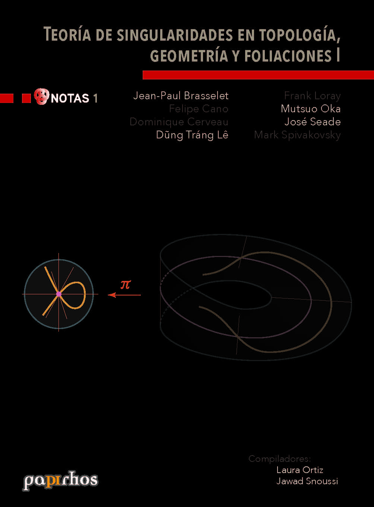
Teoría de singularidades en topología, geometría y foliaciones I
Este trabajo presenta una introducción general a distintos problemas matemáticos y sus posibles aplicaciones. Se describen algunas ideas principales, ejemplos sencillos y herramientas utilizadas para analizar los resultados. El objetivo es ofrecer una referencia accesible que permita comprender los conceptos fundamentales y sirva como punto de partida para estudios posteriores.
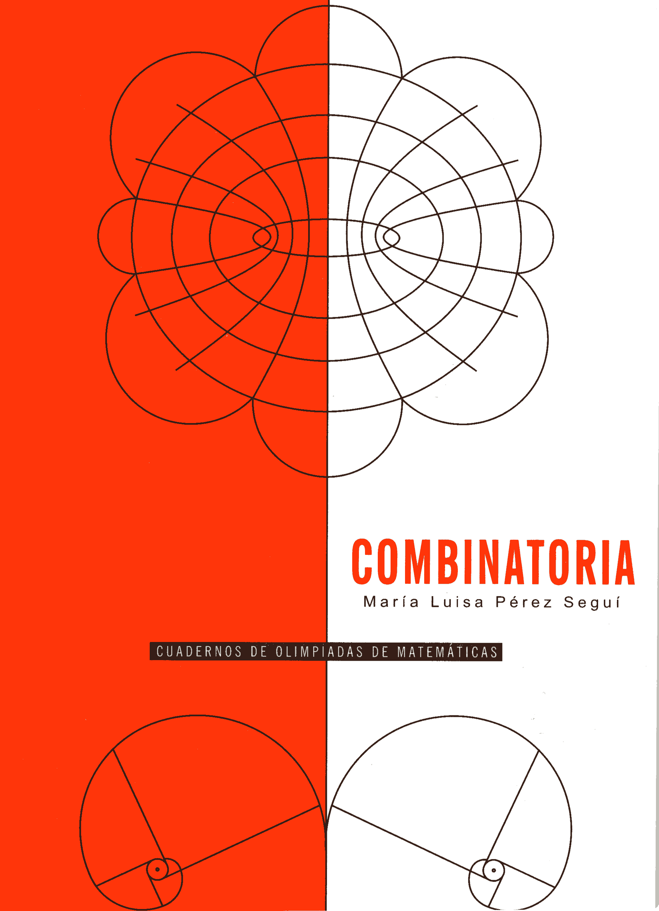
Combinatoria
Resumen no disponible por el momento.
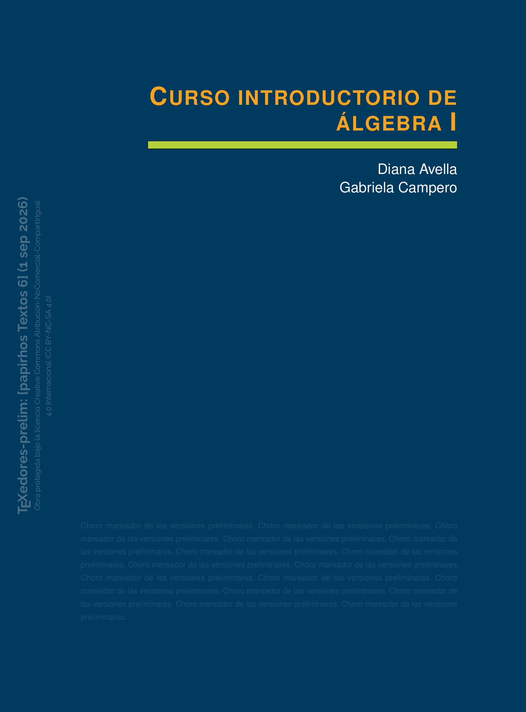
Curso introductorio de álgebra I
El presente texto está dirigido a estudiantes del primer semestre de carreras en ciencias exactas. Contiene temas que los introducen al Álgebra y busca incorporar, a través de su tratamiento, una descripción minuciosa y rigurosa de los procedimientos de demostración y deducción necesarios para formar a los estudiantes en el pensamiento matemático abstracto. Conforme se presenta el material, se introduce al lector no sólo en el lenguaje de las matemáticas, sino en la forma de estructurar las ideas, desarrollarlas y escribir los diversos resultados. Es un texto con un grado elevado de rigor, claridad y pedagogía, que puede ser utilizado de manera autodidacta o como un complemento necesario para las clases en aula.
Este primer tomo está conformado por seis capítulos, cada uno con diversas secciones y un bloque de ejercicios cuidadosamente seleccionados; incluye nociones de lógica matemática y una introducción al manejo correcto de los conjuntos. Se expone también el concepto matemático de relación, dando un especial énfasis a las relaciones de equivalencia, y se aborda a profundidad el concepto de función. El capítulo quinto se centra en los números naturales, sus operaciones y su orden, inspeccionando detenidamente los principios de inducción y del buen orden, con numerosas demostraciones. El último capítulo versa sobre combinatoria finita, incorporando primero el concepto de cardinalidad en conjuntos finitos y los principios formales para contar de manera correcta.
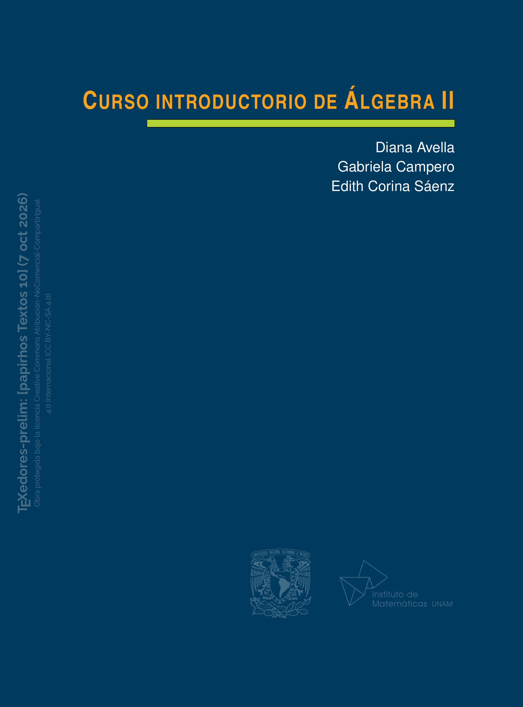
Curso introductorio de álgebra II
El presente texto, segundo tomo de la serie, está dirigido a estudiantes del primer semestre de carreras en ciencias exactas. Contiene temas que los introducen al Álgebra y busca incorporar, a través de su tratamiento, una descripción minuciosa y rigurosa de los procedimientos de demostración y deducción necesarios para formar a los estudiantes en el pensamiento matemático abstracto. Es un texto con un grado elevado de rigor, claridad y pedagogía, que puede ser utilizado de manera autodidacta o como un complemento necesario para las clases en aula.
Este tomo está conformado por cuatro capítulos; cada capítulo contiene bloques de ejercicios cuidadosamente seleccionados. En ellos se desarrolla la construcción de los números enteros y temas relacionados con esta estructura numérica. Una vez expuesta dicha construcción, se describen a detalle las características que lo llevan a ser un dominio entero. Posteriormente damos una introducción a estructuras algebraicas como son un grupo, un anillo y un dominio entero. El tercer capítulo versa sobre la noción de divisibilidad en los enteros, que incluye una exposición del algoritmo de la división, los conceptos de máximo común divisor, de mínimo común múltiplo, y de número primo. El cuarto capítulo expone el tema de congruencias en los enteros, visitando el anillo formado por las clases de equivalencia de los enteros módulo un entero positivo, además de explorar las ecuaciones con congruencias y sistemas formados con estas ecuaciones.
Grupos I
Grupos I es el primero de dos libros dedicados a uno de los hitos que revolucionaron el pensamiento matemático de su época, y que hasta nuestros días juega un papel esencial en el estudio sistemático de las ciencias: la Teoría de Grupos.
En este tomo, los autores se dirigen al público en general al explicar de manera accesible algunos de los resultados clásicos de dicha teoría. Con años de experiencia docente, introducen también a los lectores en la abstracción y el arte de las demostraciones rigurosas. Además, el texto contiene una gran cantidad de notas históricas, ejemplos trabajados y ejercicios: inicia al revisar el conjunto de los números enteros que forman un grupo con la suma usual y, de manera paulatina, desarrolla una travesía por este apasionante tema.
El presente volumen abarca la aritmética en el conjunto de los números enteros, por ejemplo, la divisibilidad, el algoritmo de la división y el de Euclides, las congruencias y la función φ de Euler. Asimismo, se analizan los grupos de permutaciones, los cíclicos, los normales y el grupo cociente. Finalmente, se introduce el concepto de homomorfismo de grupos y se demuestran los —tan usados en matemáticas— teoremas de isomorfismo.
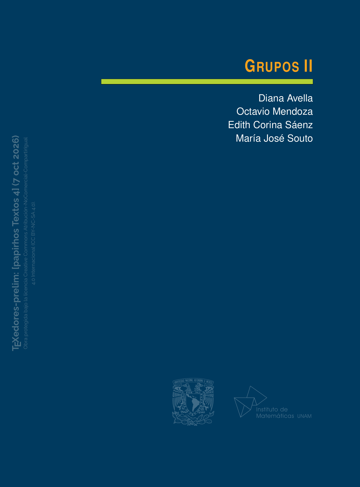
Grupos II
Grupos II es el segundo libro dedicado a un área fascinante de las matemáticas: la Teoría de Grupos. Este volumen está dirigido a estudiantes de matemáticas, física y otras áreas científicas en las que tengan ya cierto conocimiento del tema y deseen ahondar en él. Consta de cinco capítulos: Acciones de grupos en conjuntos, Acciones especiales de grupos en conjuntos, Teoremas de Sylow, Grupos abelianos finitos y, por último, Grupos solubles y nilpotentes.
En este texto, los autores profundizan el estudio del tema de los grupos, presentando algunos conceptos y resultados que se plantean usualmente al final de un curso básico de licenciatura de Teoría de Grupos, junto con otros que son más apropiados para un curso avanzado de la materia, de acuerdo con el parecer de los autores. Los capítulos Acciones de grupos y Teoremas de Sylow fueron escritos con la intención de completar el material del primer curso de Álgebra Moderna de la licenciatura en matemáticas.
Si bien el estudio de la estructura de los grupos abelianos finitos se puede iniciar en un curso de nivel licenciatura, el material presentado en el capítulo correspondiente se aborda con una profundidad que va mucho más allá de ese primer encuentro. De manera similar, el último capítulo de grupos solubles y nilpotentes puede ser utilizado para un curso avanzado de teoría de grupos.
Al igual que en el primer tomo, los autores desarrollan con detalle la mayoría de las demostraciones de los resultados enunciados, incluyendo una variedad de ejemplos que ilustran los teoremas analizados, y proponen una lista de ejercicios como trabajo complementario al final de cada sección. Al final del libro, los autores han incluido una nota histórica acerca de los temas que se tratan, con la idea de motivar al lector y proporcionarle información acerca del contexto en el que algunos de los resultados presentados se desarrollaron a lo largo de los años.
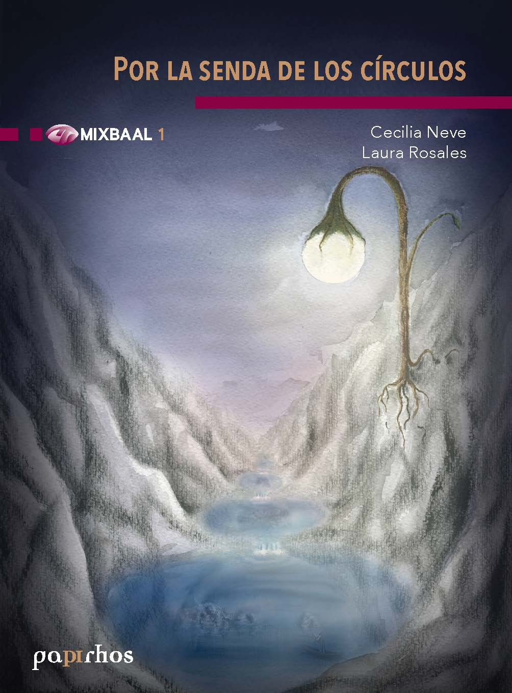
Por la senda de los círculos
Resumen no disponible por el momento.
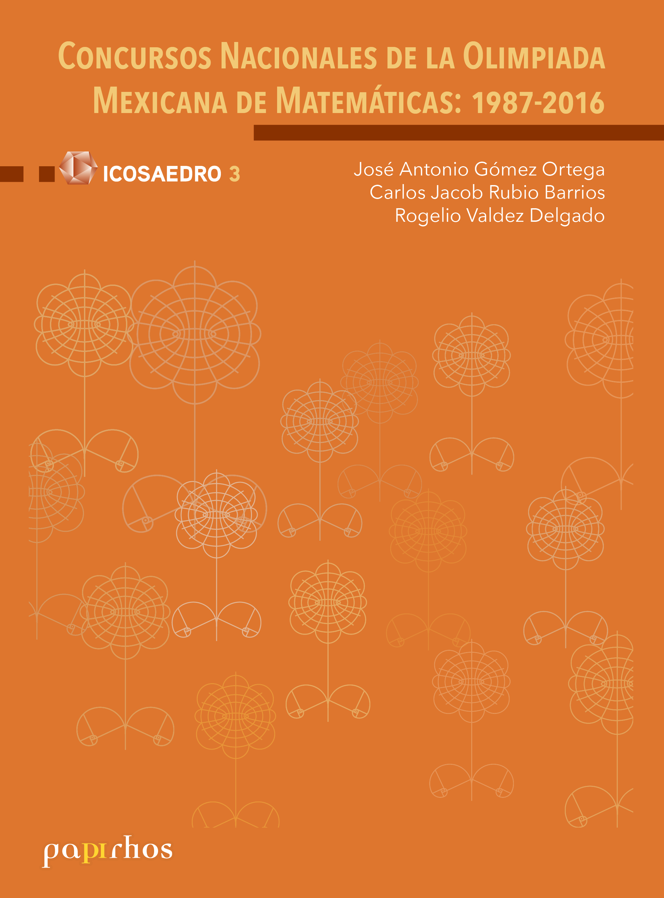
Concursos Nacionales de la Olimpiada Mexicana de Matemáticas:1987-2016
Resumen no disponible por el momento.
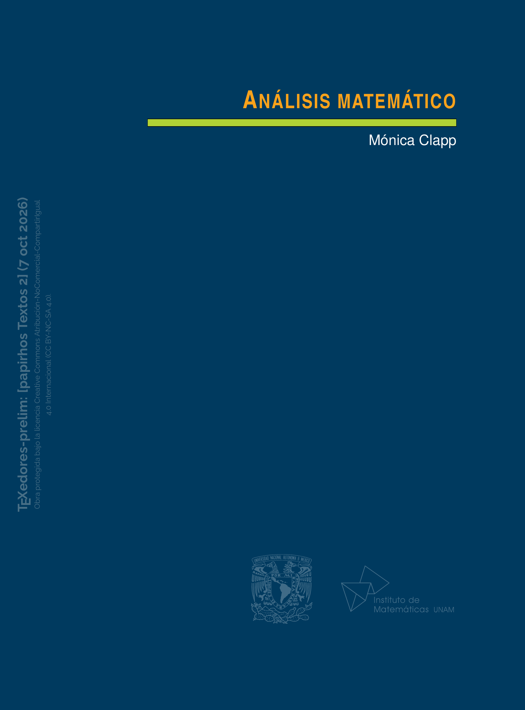
Análisis Matemático
Este libro tan esperado en la Facultad de Ciencias de la Universidad Nacional Autónoma de México, y en diversas universidades de México y de países hispanoparlantes, es el resultado de muchos años de experiencia docente y de investigación por parte de la autora. Reúne material clave en la formación en análisis de los estudiantes dematemáticas y de otras carreras afines.
Motivándolos por un problema concreto —la existencia de trayectorias de longitud mínima— la obra introduce gradualmente los conceptos básicos del análisis hasta llegar a los teoremas de punto fijo de Banach y de Arzelà-Azcoli, así como a diversas aplicaciones de ellos a la existencia de soluciones de ecuaciones diferenciales e integrales. Posteriormente presenta el concepto de diferenciabilidad en espacios de Banach y demuestra el teorema de la función implícita, que permite introducir el concepto de variedad y el estudio de problemas de minimización en variedades. La última parte de este texto se dedica a la teoría de integración de Lebesgue; introduce los espacios de Lebesgue y de Sobolev para concluir con algunas aplicaciones a la existencia de soluciones de problemas elípticos con condición de frontera.
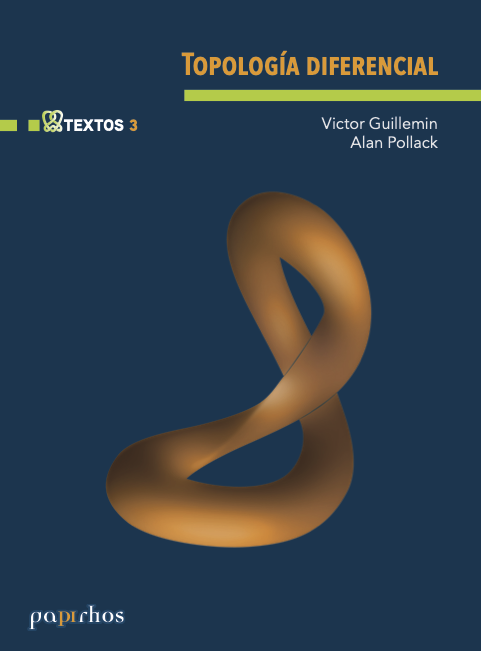
Topología Diferencial
Resumen no disponible por el momento.
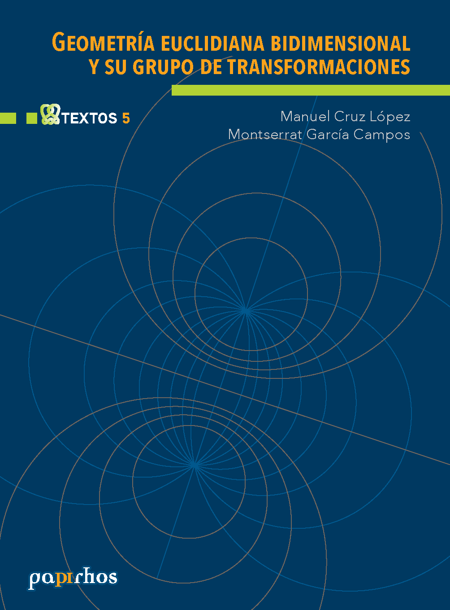
Geometría euclidiana bidimensional y su grupo de transformaciones
Resumen no disponible por el momento.
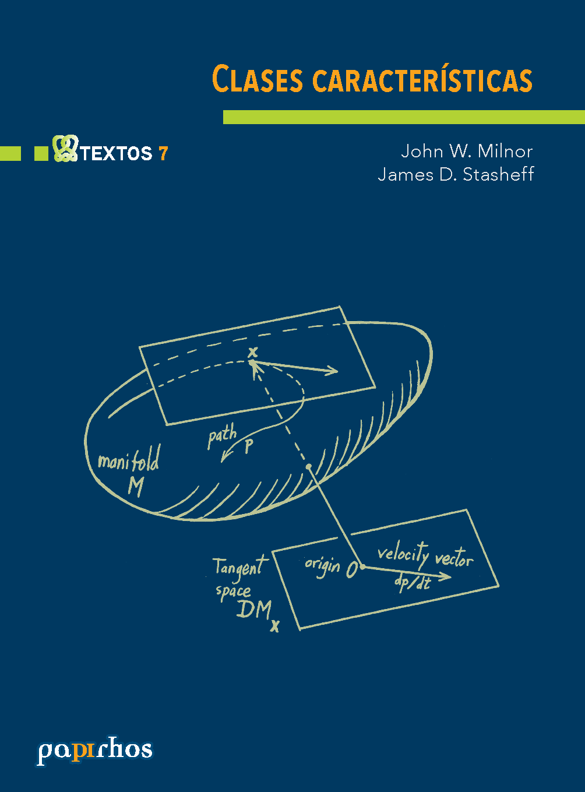
Clases características
Resumen no disponible por el momento.
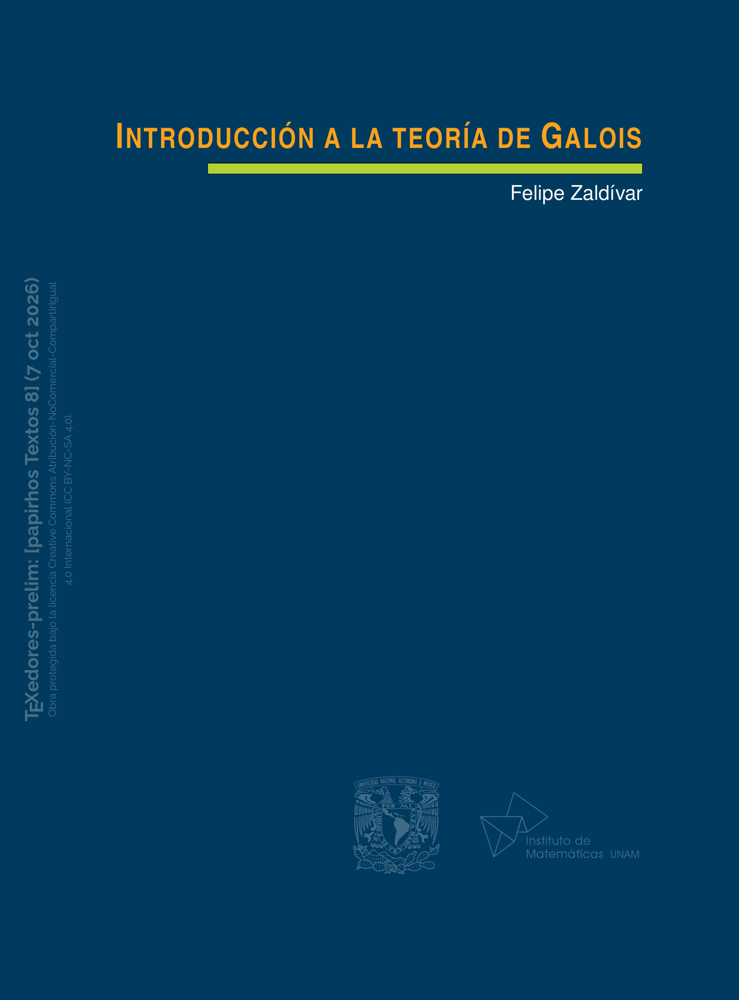
Introducción a la teoría de Galois
La teoría de Galois, cuyos orígenes se encuentran en el problema de la solubilidad de ecuaciones polinomiales mediante radicales, es una parte de la matemática con conexiones profundas a otras partes de la misma, como teoría de grupos, álgebra lineal, teoría de números y geometría algebraica, lo cual le da una riqueza y elegancia inigualables.
En este libro se comienza introduciendo los resultados básicos de la teoría de anillos y campos eligiendo los aspectos que serán de utilidad en los temas de teoría de Galois que se tratan en el texto. El libro incluye ejemplos escogidos cuidadosamente para ilustrar la teoría desarrollada y motivar desarrollos posteriores. También se tiene un buen número de ejercicios que invitan al lector a participar activamente, ya sea en un curso de licenciatura o como auxiliar en autoestudio.
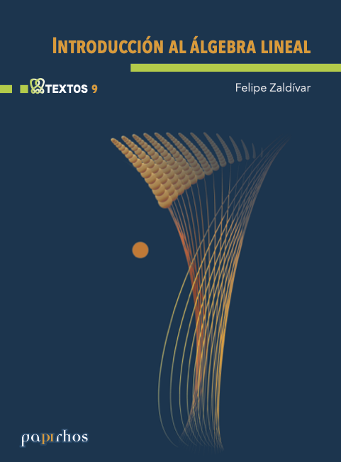
Introducción al álgebra lineal
Resumen no disponible por el momento.
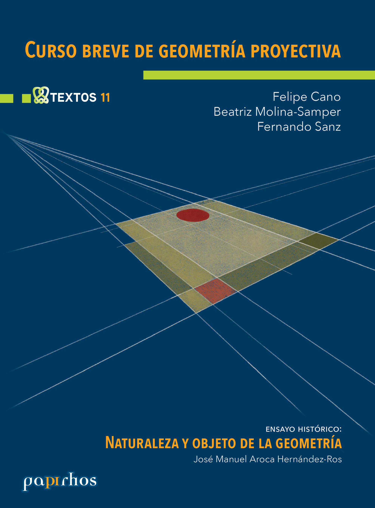
Curso breve de geometría proyectiva
Resumen no disponible por el momento.
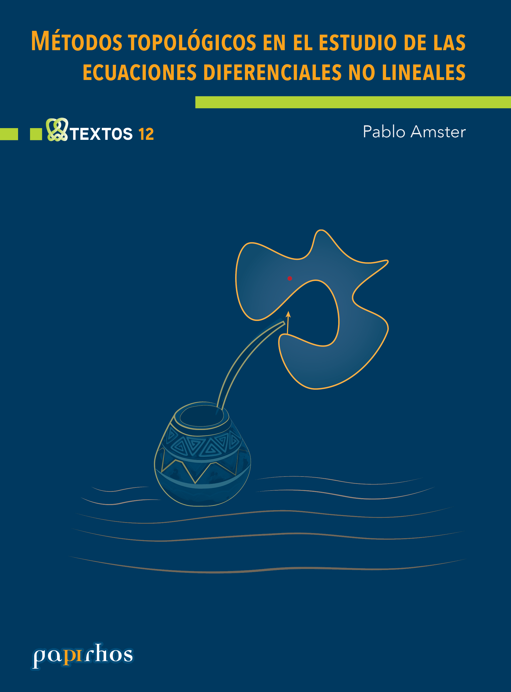
Métodos topológicos en el estudio de las ecuaciones diferenciales no lineales
Resumen no disponible por el momento.

Teoría de singularidades en topología, geometría y foliaciones II
Resumen no disponible por el momento.
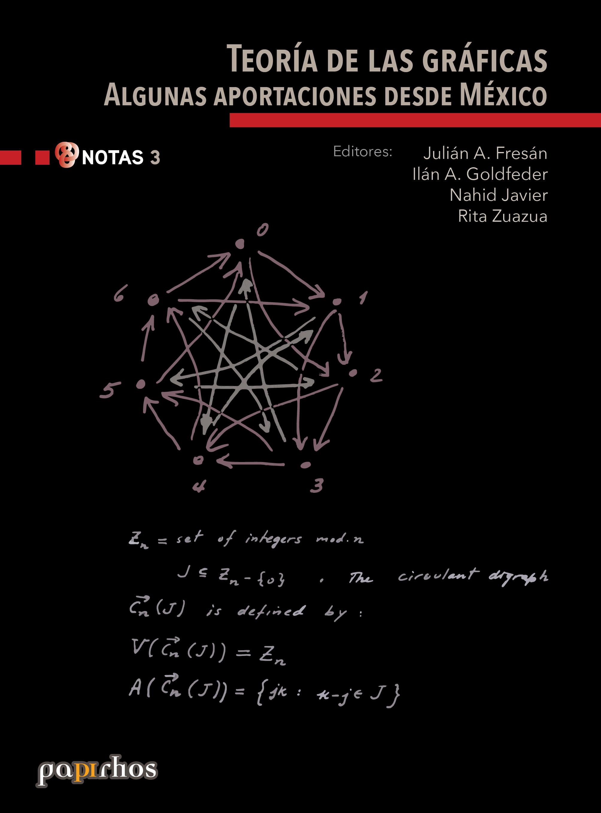
Teoría de las gráficas: algunas aportaciones desde México
Resumen no disponible por el momento.
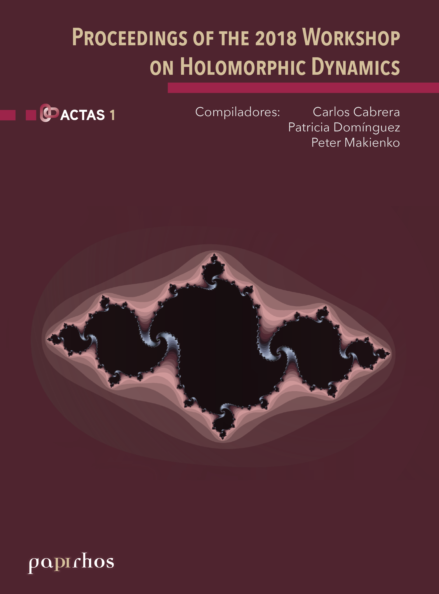
Proceedings of the Workshop on Holomorphic Dynamics
Resumen no disponible por el momento.
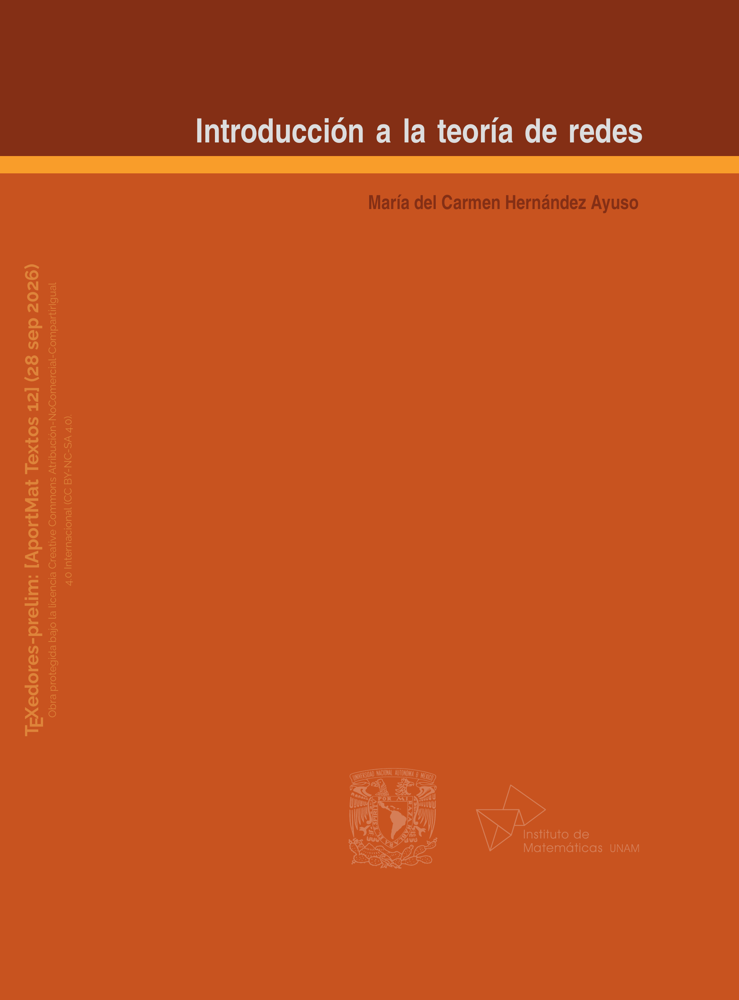
Introducción a la teoría de redes
Este libro está enfocado a los temas básicos de teoría de redes. Se presentan tanto teoría general y características de los problemas de optimización de esta rama como algoritmos para resolverlos.
Se exponen cuatro problemas básicos: árbol de peso mínimo, ruta más corta, flujo máximo y flujo a costo mínimo; estos problemas han sido resueltos principalmente mediante dos enfoques generales. Uno consiste en especializar los algoritmos de programación lineal aprovechando la estructura de cada problema y el otro en aplicar resultados de teoría de gráficas. En los primeros cinco capítulos se presentan algunos algoritmos para resolver problemas de flujo en redes según el enfoque clásico de la programación lineal. En los últimos dos capítulos se presentan generalizaciones de dos de estos problemas según el enfoque de coloración en gráficas.
La teoría de dualidad ha sido estudiada para el caso de los modelos de redes; con esto se han generado algoritmos de solución simultánea para el par de problemas duales. Este es el caso de los problemas de flujo máximo y de cadena mínima.
En cada capítulo se incluyen conceptos, resultados teóricos rigurosamente demostrados, técnicas, ejemplos numéricos y una series de ejercicios propuestos.
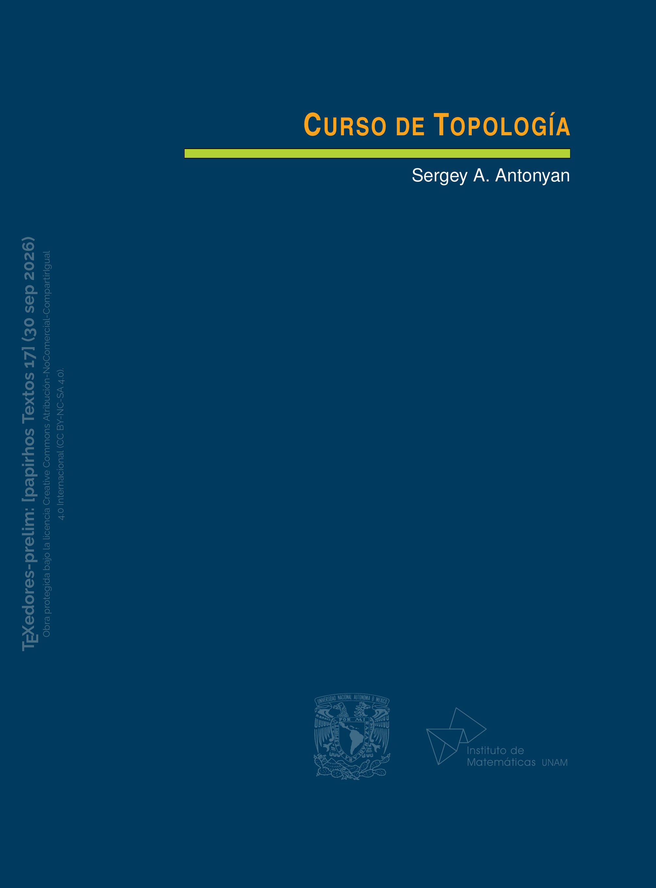
Curso de Topología
Resumen no disponible por el momento.
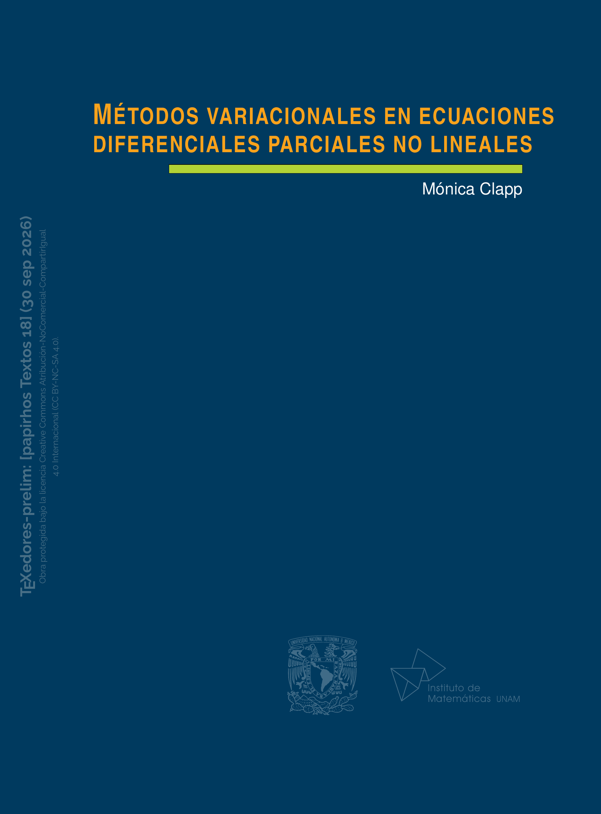
Métodos variacionales en ecuaciones diferenciales parciales no lineales
Resumen no disponible por el momento.